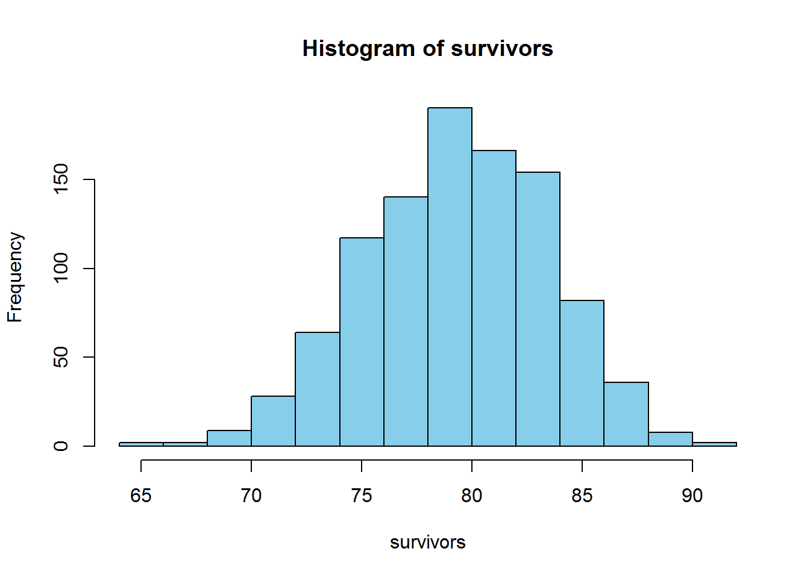
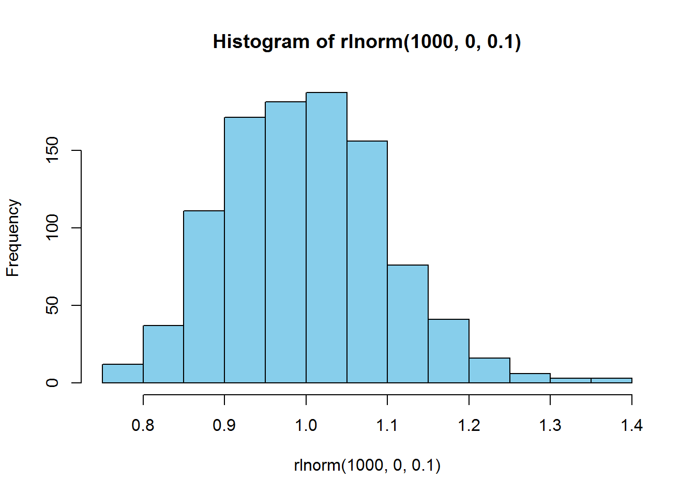

Chapter 4 Simulation and Randomization
Chapter Overview
Simulation modeling is one of the primary reasons to move away from spreadsheet-type programs (like Microsoft Excel) and into a program like R. R allows you to replicate the same (possibly complex and detailed) calculations over and over with slightly different random values. You can then summarize and plot the results of these replicated calculations all within the same program. Analyses of this type are Monte Carlo methods: they randomly sample from a set of quanities for the purpose of generating and summarizing a distribution of some statistic related to the sampled quantities. If this concept is confusing, hopefully this chapter will clarify.
In this chapter, you will learn the basic skills needed for simulation (i.e., Monte Carlo) modeling in R including:
- creation of random deviates
forloops- more advanced function writing
- summarization of many values from a distribution
IMPORTANT NOTE: If you did not attend the sessions corresponding to Chapters 1 or 2, you are recommended to walk through the material found in those chapters before proceeding to this material. Additionally, you will find the material in Section 3.3 helpful for this chapter. Remember that if you are confused about a topic, you can use CTRL + F to find previous cases where that topic has been discussed in this document.
Before You Begin
You should create a new directory and R script for your work in this Chapter. Create a new R script called Ch4.R and save it in the directory C:/Users/YOU/Documents/R-Workshop/Chapter4. Set your working directory to that location. Revisit the material in Sections 1.2 and 1.3 for more details on these steps.
4.1 Layout of this chapter
This chapter is divided into two main sections:
Required material (Sections 4.2 and 4.3) which is necessary to understand the examples in this chapter and the subsequent chapters
Example Cases (Sections 4.4 and 4.5) which apply the skills learned in the required material. In the workshop sessions, you will walkthrough 2-3 of these example cases at the choice of the group of the participants. If you are interested in simulation modeling, you are suggested to work through all of the example cases, as slightly different tricks will be shown in the different examples.
4.2 Introducing Randomness
A critical part of simulation modeling is the use of random processes. A random process is one that generates a different outcome according to some rules each time it is executed. They are tightly linked to the concept of uncertainty: you are unsure about the outcome the next time the process is executed. There are two basic ways to introduce randomness in R: random deviates and resampling.
4.2.1 Random deviates
In Section 3.3, you learned about using probability distributions in R. One of the uses was the r- family of distribution functions. These functions create random numbers following a random process specified by a probability distribution.
Consider animal survival as an example. At the end of each year, each individual alive at the start can either live or die. There are two outcomes here, and suppose each animal has an 80% chance of surviving. The number of individuals that survive is the result of a binomial random process in which there were \(n\) individuals alive at the start of this year and \(p\) is the probability that any one individual survives to the next year. You can execute one binomial random process where \(p = 0.8\) and \(n = 100\) like this:
rbinom(n = 1, size = 100, prob = 0.8)## [1] 76The result you get will almost certainly be different from the one printed here. That is the random component.
You can execute many such binomial processes by changing the n argument. Plot the distribution of expected surviving individuals:
survivors = rbinom(1000, 100, 0.8)
hist(survivors, col = "skyblue")
Another random process is the lognormal process: it generates random numbers such that the log of the values are normally-distributed with mean equal to logmean and standard deviation equal to logsd:
hist(rlnorm(1000, 0, 0.1), col = "skyblue")
There are many random processes you can use in R. Checkout Table 3.1 for more examples as well as the help files for each individual function for more details.
4.2.2 Resampling
Random deviates work great for creating new random numbers, but what if you already have a set of numbers that you wish to introduce randomness to? For this, you can use resampling techniques. In R, the sample function is used to sample size elements from the vector x:
sample(x = 1:10, size = 5)## [1] 2 8 5 4 6You can sample with replacement (where it is possible to sample the same element two or more times):
sample(x = c("a", "b", "c"), size = 10, replace = T)## [1] "b" "c" "b" "b" "b" "c" "c" "a" "b" "a"You can set probabilities on the sampling of different elements30:
sample(x = c("live", "die"), size = 10, replace = T,
prob = c(0.8, 0.2))## [1] "live" "live" "live" "live" "live" "live" "die" "live" "live" "die"Notice that this is the same as the binomial random process above, but with only 10 trials and the printing of the outcomes rather than the number of successes.
4.3 Replication
4.3.1 The for loop
In programming, a loop is a command that does something over and over until it reaches some point that you specify. R has a few types of loops: repeat, while, and for, to name a few. for loops are among the most common in simulation modeling. A for loop repeats some action for however many times you tell it for each value in some vector. The syntax is:
for (var in seq) {
expression(var)
}The way this works is the loop calculates the expression for values of var by the increments in seq. For example:
for (i in 1:5) {
print(i^2)
}## [1] 1
## [1] 4
## [1] 9
## [1] 16
## [1] 25The first time through the loop, i equals 1 and the expression is to print the square of 1. The next time through the loop, i equals 2 and the expression prints the square of 2. And so on and so on until i is 5, after which it stops (because that is the end of the sequence you specified.) If we remove the print() function, let’s see what happens:
for (i in 1:5) {
i^2
}What happened? Well, it turns out that the loop still worked, only it did not show us (or save) the results. If we want to store the results of the loop, we have to make a container for it to store the results in and tell the loop to put the results in the desired location:
results = numeric(5)This makes an empty numeric vector of length 5 that are all 0’s. This is where we will put the results of each run through the loop:
for (i in 1:5) {
results[i]=i^2
}
results## [1] 1 4 9 16 25We are saying, when i = 1, calculate 1^2 and put it in the 1st element of results. When i = 2, calculate 2^2 and put it in the 2nd element of results. So in general: calculate i^2 and put it in the ith element of results.
Now, this loop was a trivial example, because we could have very easily could have just done:
(1:5)^2## [1] 1 4 9 16 25However, there are times where it is advantageous to use a loop. Let’s build a (very) basic population model where the population abundance next year is the population abundance this year times some growth rate. If there are 1000 individuals this year, how many will there be in 3 years from now if the population gets 3.06 times bigger each year?
N = c(1000, NA, NA, NA)
for (t in 1:3) {
N[t+1] = N[t] * 3.06
}
N## [1] 1000.00 3060.00 9363.60 28652.62So we made a vector N which will serve as our starting point and container vector. We then say for the next 3 years, the number next year (N[t+1]) is the number this year (N[t]) times the growth rate. This is another basic example, but you can see how for loops could be used to run some very complex calculations.
- Simulation
- A basic Monte Carlo experiment: validate
rnormusingqnormandpnorm - Harvest-policy analysis
- Mark-recapture evaluation
- Stochastic power analysis
- A basic Monte Carlo experiment: validate
- Randomization
- Permutation tests
- The bootstrap
4.4 Simulation-Based Examples
4.5 Resampling-Based Examples
If
probdoesn’t sum to 1, then it will be rescaled:prob = prob/sum(prob)↩